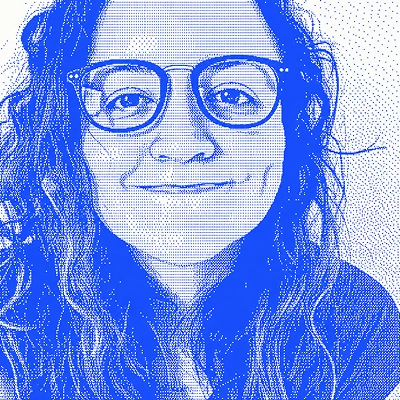

Acerca de
Conóceme
Soy diseñadora gráfica radicada en la Ciudad de México. He trabajado por más de 10 años en distintas industrias, lo que me ha enseñado a adaptarme, mantenerme curiosa y aportar un enfoque proactivo y creativo a cada proyecto.
Soy diseñadora visual enfocada en construir identidades de marca, sitios web y sistemas de diseño reutilizables que ayudan a los equipos a comunicarse con claridad.
Mi experiencia
Durante casi nueve años he trabajado de forma remota como diseñadora gráfica — creando presentaciones, sitios web y plantillas, y aprendiendo a ayudar a los clientes a conectar con sus audiencias a través del storytelling y visuales sólidos.
Qué hago
(01)
Comunicación visual
Diseño presentaciones, campañas y activos de marca que comunican ideas con claridad.
(02)
Experiencias digitales
Diseño sitios web y experiencias interactivas para equipos de marketing y producto.

(03)
Sistemas de diseño
Creo plantillas, componentes y flujos de trabajo reutilizables que ayudan a los equipos a escalar de forma consistente.
(04)
Aprendizaje continuo
Explorando nuevas herramientas — incluyendo IA — para entender cómo pueden apoyar mejores procesos de diseño.
En qué estoy trabajando
Últimamente me he enfocado en mejorar la experiencia de uso de las plantillas que construyo — haciéndolas más fáciles de usar de verdad, no solo de ver.
Cada proyecto y cada equipo es diferente, así que voy aprendiendo sobre la marcha — qué herramientas realmente ayudan y cuáles no — siempre con el objetivo de mantener el proceso centrado en las personas.